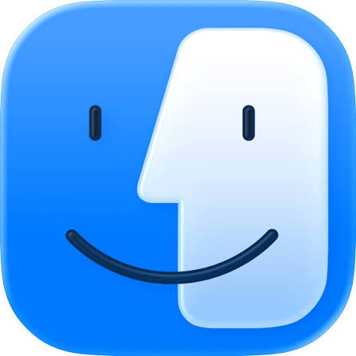
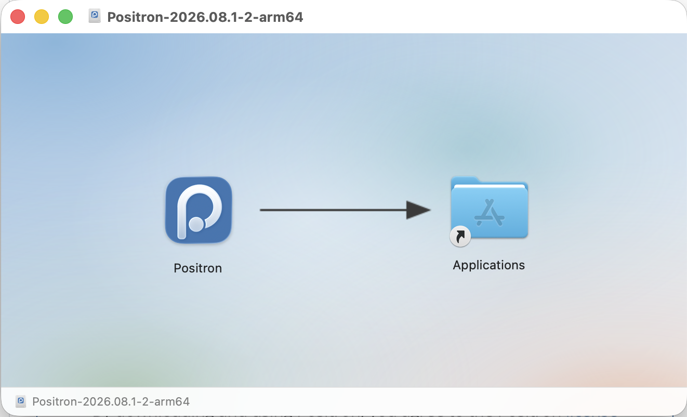
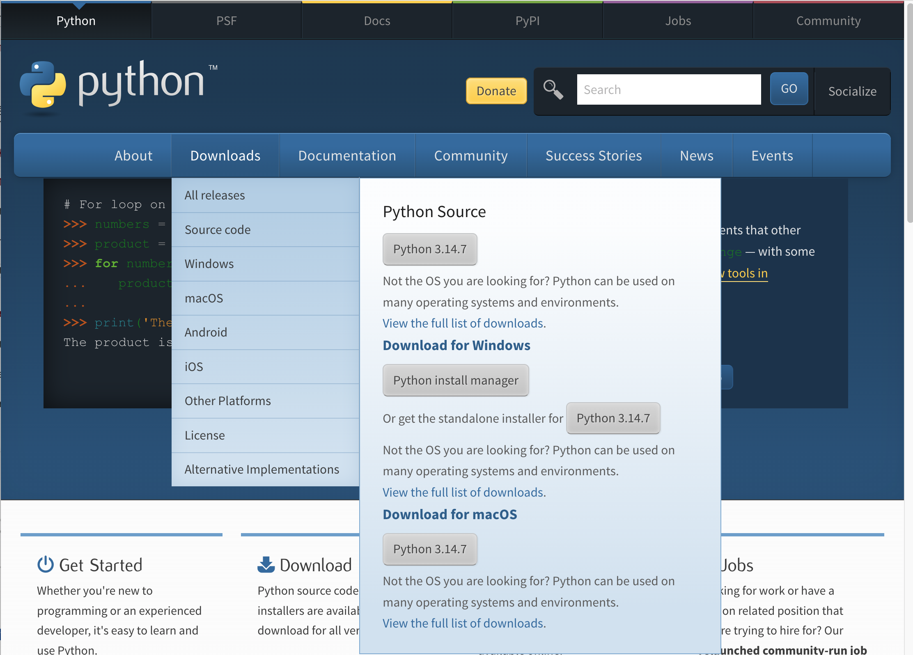
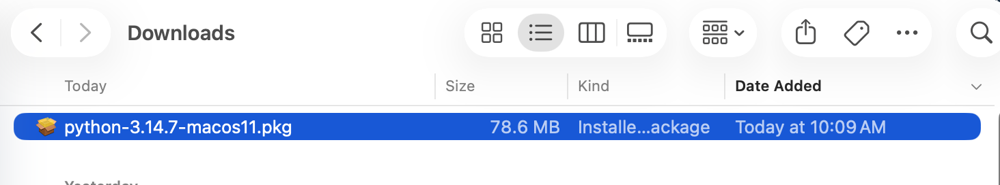
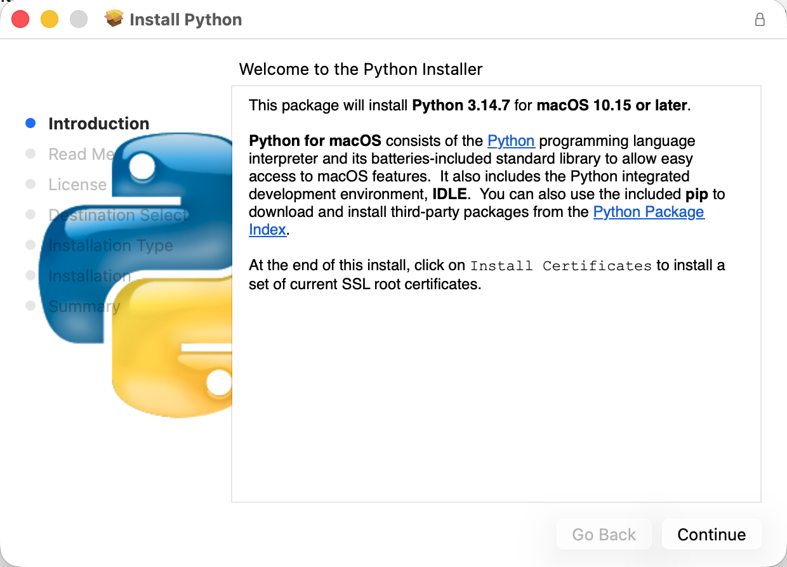
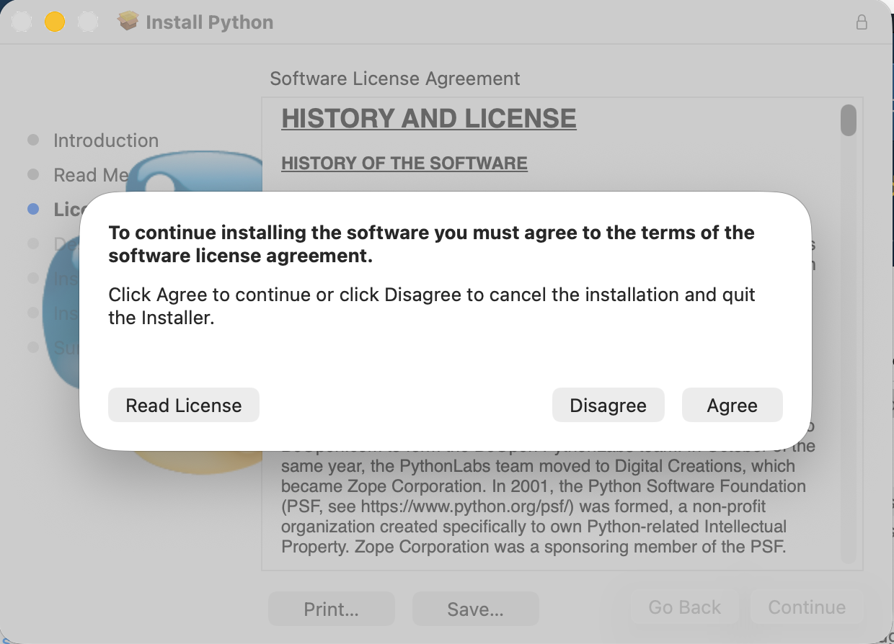
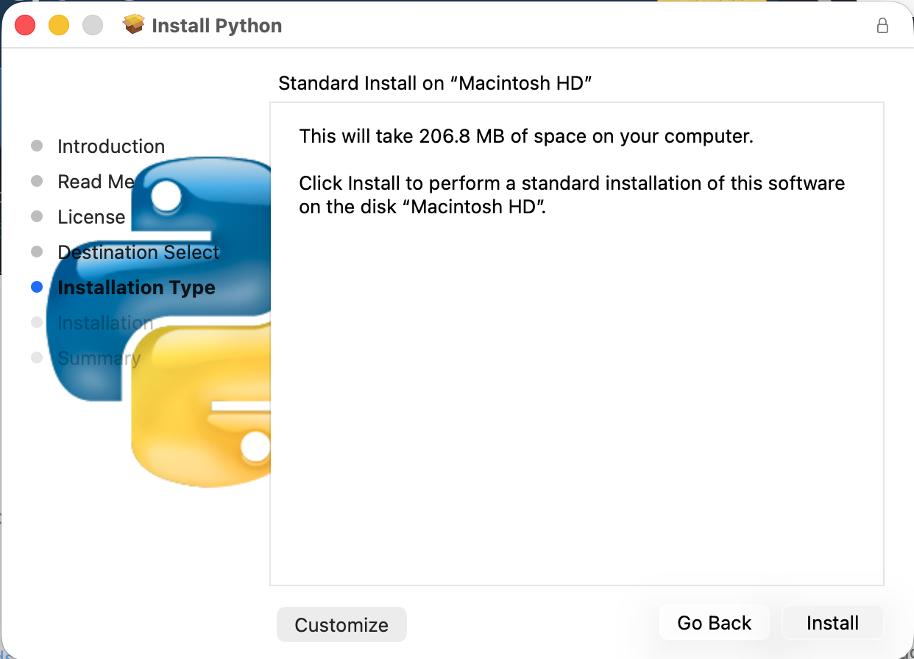
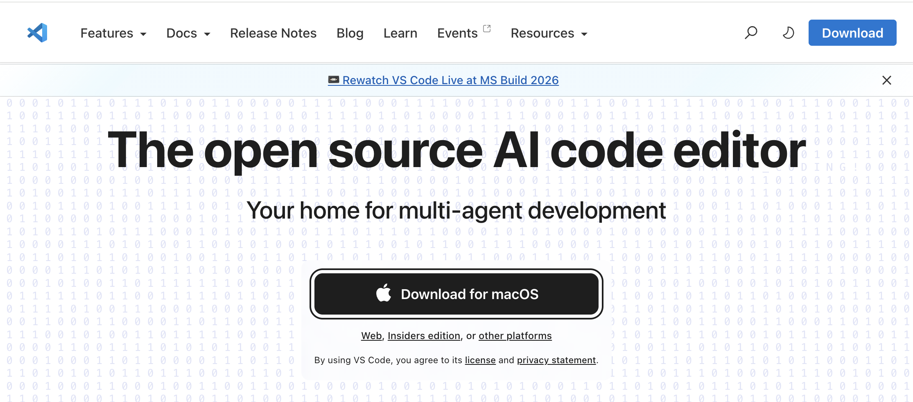
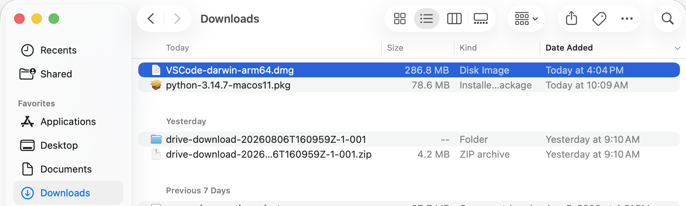
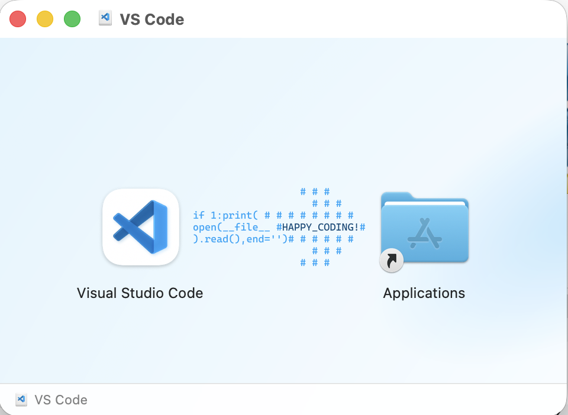

A couple methods for installing Python
All tutorials on this website can be completed using Google Colab, but for those who want to install Python on their own (local) machine, here are a couple different ways of installing it.
A typical installation for Python involves two things:
- Downloading Python
- Downloading ~something to write Python documents (scripts) in~
The most common way of installing Python is through python.org, though there are other distributions such as Anaconda. Either of these would be sufficient, but I’ve grown fond of what I’m going to call “the easy way”, which uses Positron and enforces more of a project-based system for Python environments. The two different installation guides below walk you through installing Python step-by-step.
Linux users, I presume you know what you’re doing 🤠 but you should also be able to follow the instructions here, if needed.
Work with Positron
Positron is a relatively new IDE (aka “integrated development environment”) that essentially combines some of the best of RStudio and VSCode (two alternatives) into one interface. In general, IDEs typically have some extra features that help with writing code – that’s sorta what makes them special. Positron can function just as a text editor, but it also has that additional functionality that can be nice.
Positron intends to provide features that make it ideal for working with data and it has built-in support for generating virtual environments for your projects. A virtual environment is like a sandbox - within the boundaries of the sandbox, we can install anything we need to use to write Python code for our project, but it doesn’t affect the rest of our installation (unlike any actual sandbox, the sand doesn’t escape). Critically: it just makes it easier to navigate dependencies for different projects, but if that’s gibberish to you, don’t worry about that for now.
Install Positron
First, download the Positron installer that is applicable for your device. When you click on the Download button, you will be asked to Agree to their Terms and Conditions. Once you agree, the download will begin.
The Positron installer will appear in your Downloads folder. In Finder

for Mac orFile Explorer for Windows, navigate to your Downloads folder in the left sidebar. When you click on the installer, it will open a window where you will drag and drop Positron into your Applications folder: 
Create a “Project” (or, a folder for your work)
Start a session/create an environment
uv init
uv add pandas plotnine matplotlib seaborn
Install Python from python.org
While the instructions below are for the Mac installer, the Windows installation will be similar. Basically: allow the installer to choose the defaults and “Continue” and “Agree”.
First, select the installer that’s appropriate for your device. Hover over the Downloads tab and then select the appropriate installer (if you have a Windows computer, choose the Windows installer, etc.):

When you click on the appropriate installation, it will trigger the download of the installer. In Finder for Mac or File Explorer for Windows, navigate to your Downloads folder in the left sidebar. Click on the installer to start the installation process:
Mac

Windows
Once you click on the Installer, a window will pop up to guide you through the installation process. For the most part, just click Continue:

Eventually, you will be asked to Agree to their License:

And then you will be prompted to start the installation:

There will be a couple other windows after that, but the installation will practically be complete. You have Python now!
Download VSCode
Python is the language (like Spanish or Chinese). When we write in a language, we typically either have paper or we use an application like Word or something similar. We need the same kind of tool for writing Python! These can be called “text editors” or IDEs. An IDE is an “integrated development environment” and typically has some extra features that help with writing code. VSCode can function just as a text editor, but it also has additional functionality that can be nice!
First, we’ll navigate to https://code.visualstudio.com/ to download the application. When you get there, it should recommend the version you want. At the time of writing, it highlights AI integration – know that you do not have to use it (AI’s just a buzzword). Click the button in the center of the screen that says Download ...:

The VSCode installer, like the Python installer, will go into your Downloads folder:

Unlike Python, there isn’t a long process to install it. You will simply click and drag VSCode (following the arrow shown) into your Applications folder:

And, you’re ready!